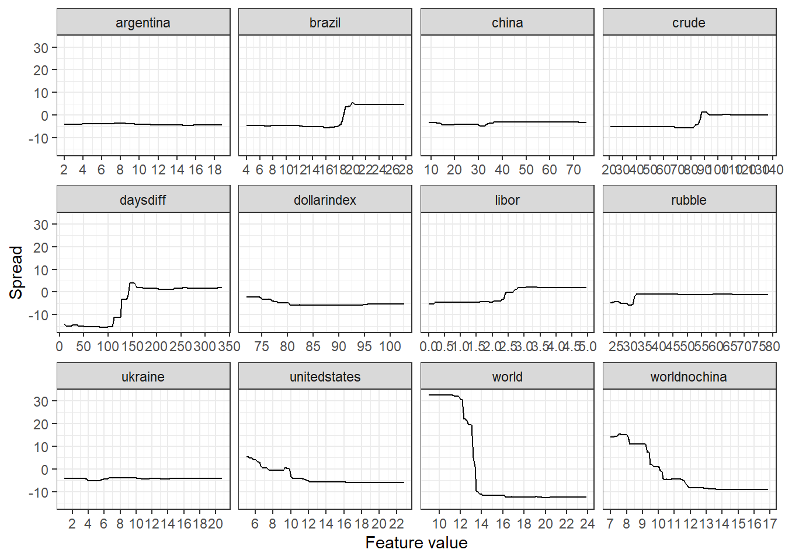

Section 4 Fingerprint Method
4.1 Quick Overview of the Fingerprint method
This section is technical and quite mathematical, the interested reader is encouraged to follow, however the main purpose is to serve as a quick reminder of how the functions are constructed. Feel free to skip to the next section if you are not interested in the technical details. This section follows straight from Li, Turkington and Yazdani.
Denote the model prediction function \(\hat{f}\) we a trying to find as
\[ \hat{y} = \hat{f}(x_1, \dots, x_m) \] In general the prediction function depends on the \(m\) input parameters or features. The partial dependence function only depends on one of the features, \(x_k\). For a given value of \(x_k\), this partial dependence function returns the expected value of the prediction over all other possible values for the other predictors, which we denote as \(x_{\backslash k}\). The partial dependence function is then defined as
\[ \hat{y}_k = \hat{f}_k(x_k) = E[\hat{f}(x_1, \dots, x_{k-1}, x_{k+1}, \dots, x_m)] = \int \hat{f}(x_1, \dots, x_m) p(x_{\backslash k}) dx_{\backslash k} \] where \(p(x_{\backslash k})\) is the probability distribution over \(x_{\backslash k}\).
In practice we follow the following steps:
- Choose a value of the feature \(x_k\), say \(\alpha\)
- Combine this value with one of the actual input vectors for the remaining variables, \(x_{\backslash k}\), and generate a new prediction from the function: \(\hat{y} = \hat{f} (x_1, \dots, x_{k-1}, \alpha, x_{k+1}, \dots, x_m)\).
- Repeat step 2 with every input vector for \(x_{\backslash k}\), holding the value for \(x_k = \alpha\) constant, and record all predictions.
- Average all the predictions for this value of \(x_k\) to arrive at the value of the partial prediction at that point, \(y_{x_k}\).
- Repeat steps 1 through 4 for any desired values of \(x_k\) and plot the resulting function.
The partial dependence function will have small deviations if a given variable has little influence on the model’s predictions. Alternatively, if the variable is highly inf luential, we will observe large f luctuations in prediction based on changing the input values.
Next, we decompose a variable’s marginal impact into a linear component and a nonlinear component by obtaining the best fit (least squares) regression line for the partial dependence function. We define the linear prediction effect, the predictive contribution of the linear component, as the mean absolute deviation of the linear predictions around their average value. Mathematically we write,
\[\text{Linear Prediction Effect}(x_k) = \frac{1}{N} \sum^{N}_{i=1}\left| \hat{I}(x_{k,i}) - \frac{1}{N} \sum^{N}_{j=1} \hat{f}(x_{k,j}) \right|\]
In the above equation, for a given predictor \(x_k\), the prediction \(\hat{I}(x_{k,i})\) , results from the linear least square fit of its partial dependence function, and \(x_{k,i}\) is the \(i\)th value of \(x_k\) in the dataset.
Next, we define the nonlinear prediction effect, the predictive contribution of the nonlinear component, as the mean absolute deviation of the total marginal (single variable) effect around its corresponding linear effect. When this procedure is applied to an ordinary linear model, the nonlinear effects equal precisely zero, as they should. Mathematically we write,
\[ \text{Nonlinear Prediction Effect}(x_k) = \frac{1}{N} \sum^{N}_{i=1}\left| \hat{I}(x_{k,i}) - \hat{f}(x_{k,i}) \right| \]
A similar method can be applied to isolate the interaction effects attributable to pairs of variables \(x_k\) and \(x_l\), simultaneously. The procedure for doing this is the same as given earlier, but in step 1 values for both variables are chosen jointly. The partial dependence function can then be written as
\[ \hat{y}_{k,l} = \hat{f}_{k,l}(x_k, x_l) = E[\hat{f}(x_k, x_{\backslash k}, x_l, x_{\backslash l})] = \int \hat{f}(x_1, \dots, x_m) p(x_{\backslash (k l)}) dx_{\backslash k}dx_{\backslash l} \]
We define the pairwise interaction effect as the demeaned joint partial prediction of the two variables minus the demeaned partial predictions of each variable independently. When this procedure is applied to an ordinary linear model, the interaction effects equal precisely zero, as they should. Mathematically we write,
\[ \text{Pairwise Interaction Effect}(x_k, x_l) = \frac{1}{N^2} \sum^{N}_{i=1} \sum^{N}_{j=1} \left| \hat{f}(x_{k,i}, x_{l, j}) - \hat{f}(x_{k,i}) - \hat{f}(x_{l, j})\right| \]
4.2 Critical Values
The fingerprint method is great for determining critical values of the most important feature in forecasting the value of a spread. Below we continue with the corn December-December example. Here we show the fingerprints for each of the features of the model. For each of the facets we keep the scale of the y-axis contant, this enables size comparison between the effects of the different features.

From the above we can clearly see some elbows in the line plots, these are ranges of the specific features where we can expect to see to big changes in the values of the spreads. The daysdiff as an example, here we see a big decrease in the value of the spread when the feature value decreases below 150. It is interesting to note that at around 150 days before expiry of the front contract we are in the United States summer. This is the critical period for the corn market, if there is inclement weather here it will destroy the crop. However, most of the time after the weather stress period has passed the spread tends to collapse into a stronger contango. Other interesting critical values are found for single figure United States stock-to-usage numbers as well as global stock-to-usage numbers under 14%. In both of these cases we should see big backwaration moves.